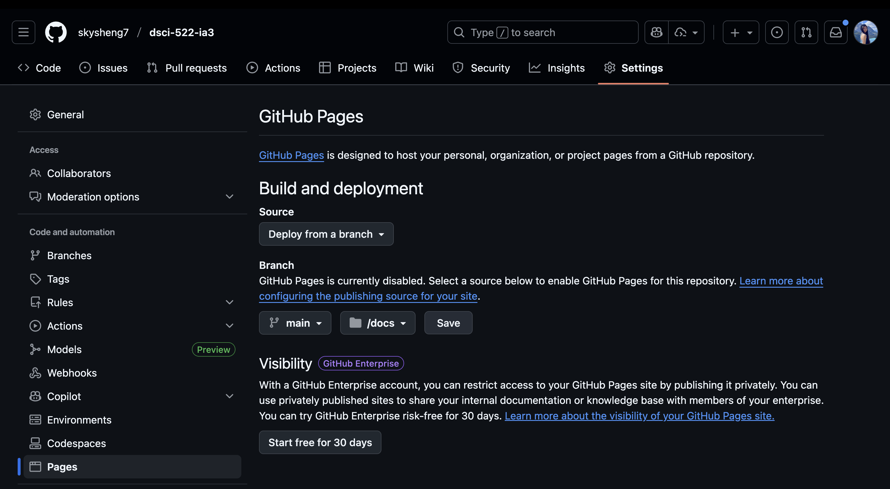

Individual assignment 3
Summary
This assignment is hands-on practice with Quarto reports, which you will use for your project report. You get a short, messy report and turn it into a polished one: Quarto numbers the figures and tables, builds the table of contents and the reference list, and fills in numbers from your code, so you never update them by hand.
- Textbook: Reproducible reports with Quarto
- Quarto cheatsheet: the code we ran in class for this assignment, step by step
- For the bonus: Quarto and GitHub Pages (DSCI 521 notes)
Instructions
Make the repository. Open the Python template or the R template, click Use this template > Create a new repository, and make a public repository under your personal account (not under UBC-MDS). Clone it and
cdinto it.Start the container. Open Docker Desktop, then run
docker compose upin the repository folder. It gives you JupyterLab (Python) or RStudio (R) with everything installed (see below).Make the figures and table. In the terminal inside JupyterLab or RStudio, run the script (command below). New plots and a
.csvfile appear inresults/.Make the 7 edits to
reports/qmd_example.qmd. The Syntax you need section below has an example of each.- Headers and table of contents: turn the plain section names (Aim, Data, Methods, Results, References) into
#headers, and add a table of contents to the YAML header. - References: point the YAML header at
references.bib, and replace each hand-typed citation (e.g. “Van Rossum and Drake 2009”) with a citation key. - Figures: give both figures a caption and a
#fig-label, and make the second one 60 to 70% wide. - Table: give the table a
tbl-label and a caption. - Cross-references: replace every hard-coded “Figure 1”, “Table 1” and so on in the text with a cross-reference such as
@fig-horse-pop. - Inline code: replace the
???in the text with inline code that printslargest_sd. - Hide the code: set
echo: falseso the rendered report shows figures and tables, but no code.
- Headers and table of contents: turn the plain section names (Aim, Data, Methods, Results, References) into
Render the report to HTML and PDF (commands below) and open both to check your edits. Then commit and push.
Optional bonus: GitHub Pages. Publish the HTML report on the web (steps below).
Clean up. Press
Ctrl + Cin the terminal where you randocker compose up, then rundocker compose rm.
Start the container from your repository folder:
docker compose upOpen the link that starts with http://127.0.0.1:8888/lab?token= from the terminal output. Then open a terminal in JupyterLab and run:
python scripts/generate_figures.py --input_dir="data/00030067-eng.csv" \
--out_dir="results"
quarto render reports/qmd_example.qmd --to html
quarto render reports/qmd_example.qmd --to pdfGo to http://localhost:8787 and log in with username rstudio and password password. Then open a terminal in RStudio and run:
Rscript scripts/generate_figures.R --input_dir="data/00030067-eng.csv" \
--out_dir="results"
quarto render reports/qmd_example.qmd --to html
quarto render reports/qmd_example.qmd --to pdfThe rendered files appear next to qmd_example.qmd in reports/. JupyterLab may not show the figures inside the HTML file: open it from your own file browser instead.
YAML header (edits 1, 2 and 7), at the top of qmd_example.qmd. This is what it looks like when you’re done:
---
title: "DSCI 310: Historical Horse Population in Canada"
author: "Tiffany Timbers & Jordan Bourak"
editor: source
format:
html:
toc: true
toc-depth: 3
pdf:
toc: true
toc-depth: 3
bibliography: references.bib
execute:
echo: false
---Delete the old format: html line: a setting can only appear once.
Headers (edit 1): # Aim, # Data, # Methods, # Results, # References.
Citations (edit 2): put the key in square brackets after @. Separate several keys with ;.
Horse population data were sourced from the
[Government of Canada's Open Data website](http://open.canada.ca/en/open-data) [@horses1; @horses2].Only references you cite show up in the reference list.
Figures (edits 3 and 5): caption in the square brackets, label and width in the curly brackets, then refer to the label in the text. Delete the old “Figure 1: …” line under the image.
{#fig-horse-pop width=80%}
We can see from @fig-horse-pop that Ontario, Saskatchewan and Alberta ...Table (edits 4 and 5): add a label and caption as the first lines of the code cell that makes the table, and delete the old “Table 1. …” line above it.
We present the standard deviations in @tbl-horse-sd.
```{python}
#| label: tbl-horse-sd
#| tbl-cap: Standard deviation of historical (1906-1972) horse populations for each Canadian province.
horses_sd_table = pd.read_csv("../results/horses_sd.csv")
largest_sd = horses_sd_table['Province'].values[0]
Markdown(horses_sd_table.to_markdown(index = False))
```We present the standard deviations in @tbl-horse-sd.
```{r}
#| label: tbl-horse-sd
#| tbl-cap: Standard deviation of historical (1906-1972) horse populations for each Canadian province.
horses_sd_table <- read_csv("../results/horses_sd.csv")
largest_sd <- horses_sd_table$Province[1]
knitr::kable(horses_sd_table)
```Inline code (edit 6): a single backtick, the language in curly brackets, then the code.
we zoom in and look at the province of `{python} largest_sd`, which had ...we zoom in and look at the province of `{r} largest_sd`, which had ...Quarto docs if you want more detail: table of contents, citations, figures, tables, inline code, execution options.
In the root of your repository, create
_quarto.ymlwith:_quarto.yml
project: type: website output-dir: docsAlso in the root, create an empty
.nojekyllfile (touch .nojekyll). It tells GitHub Pages to serve your files as they are.From the root, run
quarto render. The rendered site lands indocs/. Check thatdocs/containsindex.htmland.nojekyll(ls -a docs).Commit and push, including
docs/.On GitHub, go to Settings > Pages. Under Source pick Deploy from a branch, then pick the
mainbranch and the/docsfolder, and click Save.
Wait a few minutes and refresh: the page shows the link to your live report.
- A YAML error when you render: indent with 2 spaces (not 4, not a tab), and put a
:after every setting name. - A setting seems ignored: check it appears only once in the YAML header (e.g. no leftover
format: html). - The reference list is empty: you haven’t cited anything yet. Add
[@key]citations in the text. @fig-...or@tbl-...shows as “?@fig-…”: labels must start withfig-ortbl-and use-, not_(fig-horse-pop, nothorse_pop).- The PDF fails but the HTML works: read the error message for the line number, and check special characters in your captions.
Submission instructions
On Gradescope, enter (there is no PDF to make):
- the URL of your GitHub.com repository for this assignment
- optional bonus: the URL of your report on GitHub Pages
See the syllabus for the due date.
This assignment is graded for completion:
| Grade | Description |
|---|---|
| 110% | All 7 edits are done, the report renders to a working PDF and HTML file, and the HTML report is served on GitHub Pages |
| 100% | All 7 edits are done, and the report renders to a working PDF and HTML file |
| -15% | For each of the 7 edits that is missing |
| -15% | The report does not render to a working PDF and HTML file |
| -100% | The assignment was not attempted |